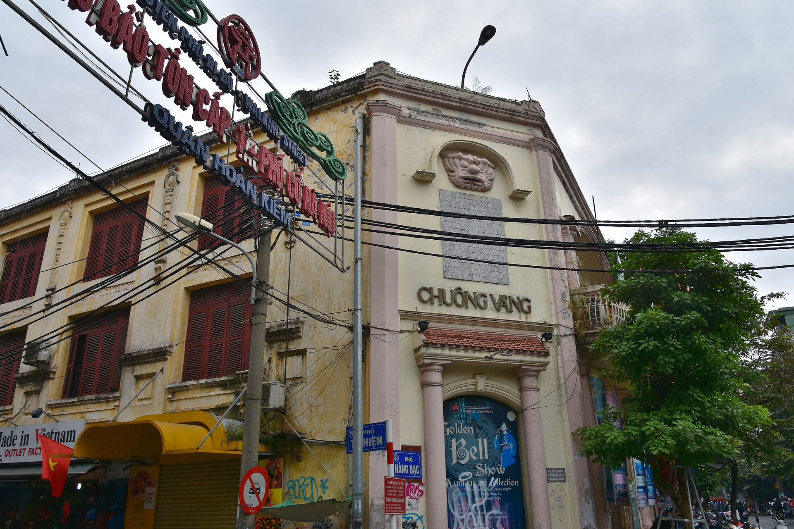

Day 01 · SUN
抵達河內
Hà Nội · 老城區 Phố cổ

落地日唔好安排任何要準時嘅事。入境慢、Grab 塞車、酒店未收拾好房，全部都係常態。
- 機場
- 內排國際機場 NIA（HAN）
- 入城
- Grab 45–60 分鐘
- 住宿
- 老城區
- 上午抵達內排國際機場Sân bay Quốc tế Nội Bài。入境連行李約 30–60 分鐘。
- 中午入城Grab 約 350,000–450,000 VND（HK$110–145）；慳錢搭 86 號巴士，45,000 VND。
- 下午還劍湖（Hồ Hoàn Kiếm）行一圈Ngọc Sơn 祠、升龍水上木偶劇院門口探路。
- 晚上啤酒街（Phố Tạ Hiện）bún chả、phở、bia hơi。十一點前返酒店。
如果係星期六晚機成張時間表要順移一日，星期三嘅沙壩就會少半日。